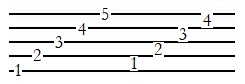
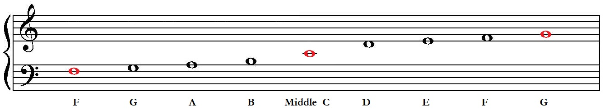
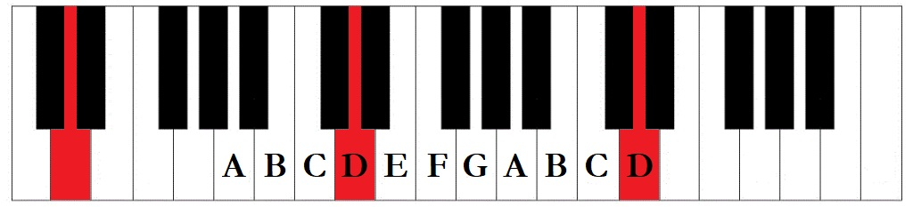
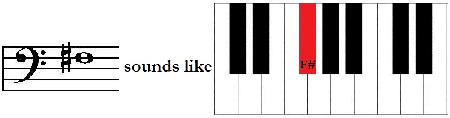
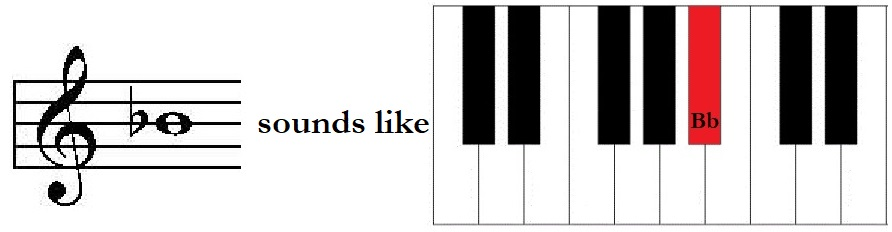
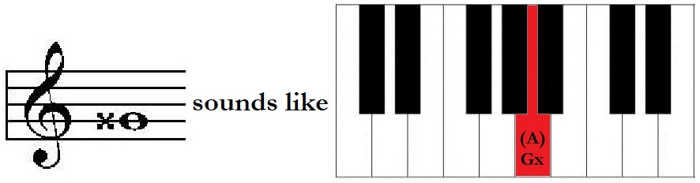
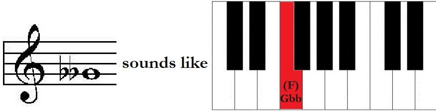

Reading Treble Clef and Bass Clef
The musical staff consists of five lines and four spaces.
We use the staff to organize musical pitches from low to high. In scientific terms, each line
and space is assigned a discrete pitch frequency within the context of a musical scale; but in
essence, all you need to remember is this:
when notes move up the staff, they
sound higher; when notes move down the staff, they sound lower.
Treble Clef
We use the Treble Clef to write a higher note range. As a point of reference, we may observe
how the curl of the Treble Clef curves around the second line of the staff. Notes on this line are
called "G."
Treble Clef is used by soprano and alto (sometimes tenor) singers, violin, flute, etc.
Bass Clef
We use the Bass Clef to write a lower note range. As a point of reference, we may observe how
the shape of the Bass Clef highlights the fourth line of the staff. Notes on this line are called
"F."
Bass Clef is used by bass singers, cello, string bass, tuba, etc.
C Clef
Some musicians (totally not weirdos at all) use C Clef to write a middle note range which
would be inconvenient to write using the other clefs. As a point of reference, we may observe that
the center of the C Clef shape designates a line as Middle C. The C Clef may be moved to
place Middle C on any line.
C Clef is used by viola (called "Alto Clef"), cello (called "Tenor Clef"), bassoon, etc.
When the C Clef places Middle C on the middle line of the staff, it is commonly called "Alto Clef."
Grand Staff
Middle C may be written in Treble or Bass Clef by using a leger line. Leger lines may be used to write notes above or below the range of the staff.
Middle C is exactly in between (in the middle of) Treble Clef and Bass Clef.
Note: There are other mnemonic devices to remember the note names of the lines and spaces. I
prefer to use only three landmark notes (in red) and practice counting up or down the staff. This
process better leads to fluency, as other mnemonics may become crutches if overused.
The Musical Alphabet
We differentiate pitches by using the letters:
A - B - C - D - E - F - G
As seen in the Grand Staff above, ascending notes go in alphabetical order.
On the piano keyboard, going in ascending alphabetical order means moving to the right. Modifiers
called "Accidentals" allow us to use the black notes, but the Musical Alphabet may generally
be thought of as referring just to the white notes.

Note: The Musical Alphabet repeats itself up and down the range of the keyboard and the music
staff.
Steps and Skips
On the Staff
When moving in alphabetical order on the staff, notice that notes are placed on alternating
lines and spaces. Moving from one note to another in this manner (line-space-line-space) is moving
by "step."
When moving from a line note to the next line note (or from a space note to the next space
note), notice that one note will be passed over. Moving in this way (line-line or space-space) is
moving by "skip."
On the Piano Keyboard
The piano keyboard is a helpful visual to further differentiate between half-steps and
whole-steps.
Half-steps move from one piano key (black or white) to the next (black or white).
Whole-steps are simply two consecutive half-steps. A whole step on the keyboard
will have one single key between the two notes (there is one black key between C and D).
IMPORTANT!
Observe on the piano keyboard that B-C and E-F are the only places where there are two white
notes a half-step apart. These are the only all-white-note half-steps. While this is plain to see on
the piano keyboard, this important point is not shown on the staff.
Accidentals - sharps, flats, naturals
Accidentals are symbols used to modify the notes of the Musical Alphabet by raising or lowering by a half-step or a whole-step.
- Sharp - Raises by a half-step
 - Flat - Lowers by a half-step
 - Natural Sign - negates any prior accidental
On the piano keyboard, the natural sign usually means to play on the white notes. - Double Sharp - Raises by a whole-step
 - Double Flat - Lowers by a whole-step
